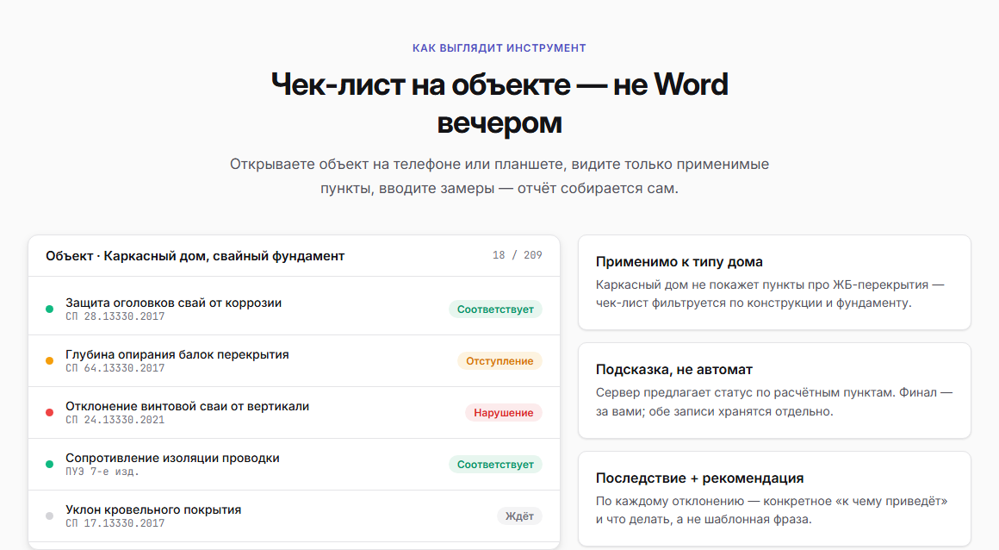
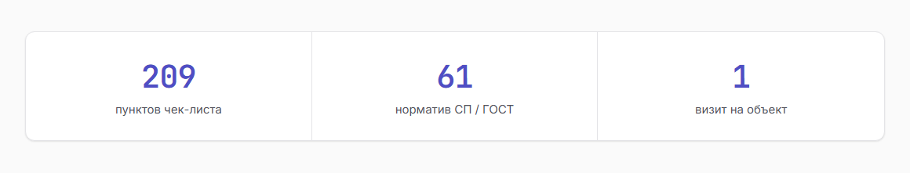
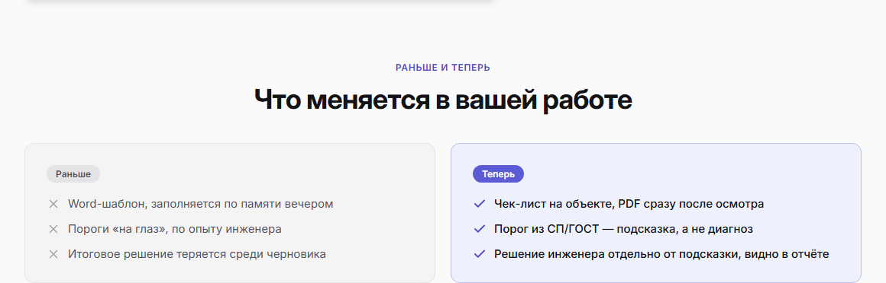
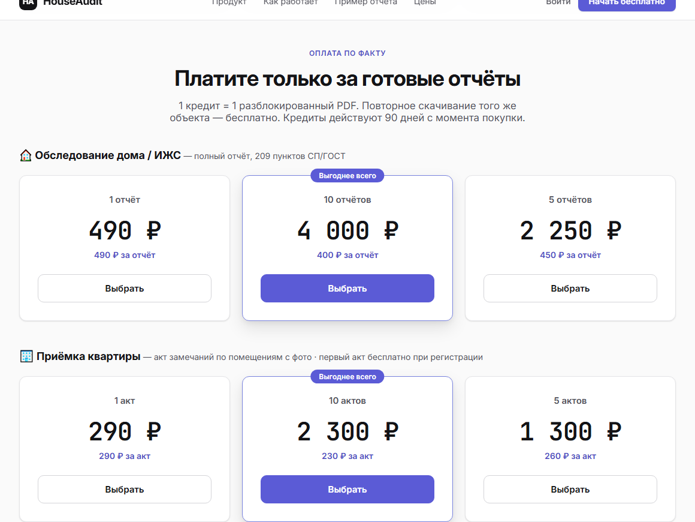
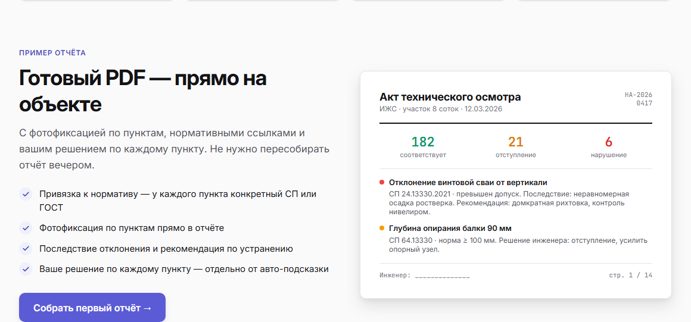
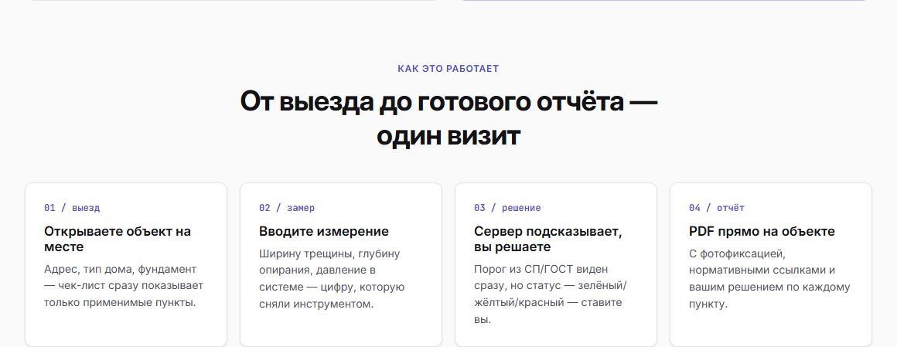
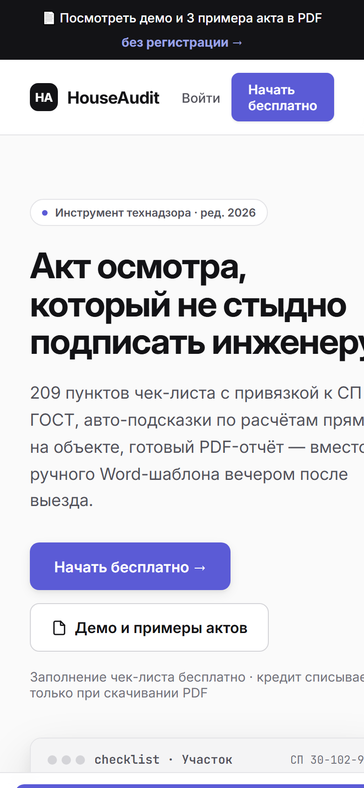

КЕЙС · СОБСТВЕННЫЙ ПРОДУКТ · B2B
Профессиональная аудитория не прощает маркетингового тона: инженер закрывает страницу на первом восклицательном знаке. Здесь весь лендинг построен на точности — нормативы с номерами, реальный экран продукта и честная граница ответственности.
HouseAudit — инструмент для инженеров, которые выезжают на технический осмотр домов и приёмку квартир. Раньше инженер писал заметки на объекте, а вечером перепечатывал их в Word-шаблон. Здесь он открывает объект на планшете, видит только применимые к этой конструкции пункты, вводит замеры — и получает готовый PDF-акт прямо на объекте.
Аудитория — практикующие специалисты: инженеры-обследователи, технадзор ИЖС, независимые бюро. Люди, которые сами знают нормативы и мгновенно чувствуют, когда им продают воздух.
С B2C-лендингом можно давить на эмоцию. С инженером наоборот: чем больше обещаний, тем меньше доверия. Три возражения, которые нужно было снять:
На первом экране — рабочий интерфейс: пункт «Отступ от красной линии улицы», норматив СП 30-102-99, замер инженера 4.2 м, пороги 2.0 и 6.0 м, подсказка сервера «отступление» и три кнопки статуса. Инженер за пять секунд понимает и как это работает, и что автор разбирается в предмете. Ни один рекламный абзац такого не даёт.

Эта фраза вынесена на первый экран и повторяется в блоке процесса. Она снимает самое болезненное возражение: инструмент не подменяет специалиста, а считает пороги за него. Отдельно указано, что обе записи — подсказка и решение инженера — хранятся раздельно и обе видны в отчёте. Для человека, который отвечает за подпись, это решающий аргумент.
Вместо фразы «учитываем все актуальные нормы» — бегущая строка с реальными документами: СП 20.13330.2017, ГОСТ 31937-2011, ПУЭ 7-е изд., СП 63.13330.2018 и далее. Профессионал читает эти номера как знак компетентности. Рядом сухая полоса цифр: 209 пунктов, 61 норматив, 1 визит.

Два столбца: слева привычная боль — Word-шаблон по памяти вечером, пороги на глаз, решение теряется в черновике. Справа — как стало. Это работает лучше списка фич, потому что человек узнаёт в левой колонке свой вечер после выезда.

Один кредит — один разблокированный PDF, повторное скачивание того же объекта бесплатно, кредиты живут 90 дней. Первый чек-лист заполняется без оплаты, кредит списывается только при скачивании. Для специалиста с нерегулярными выездами это снимает страх переплаты, а лендинг честно проговаривает механику в блоке цен и в FAQ — там первым вопросом стоит именно «спишется ли ещё кредит при повторном скачивании».


Вывод, который переношу в другие B2B-проекты: профессионалу нужно показать продукт в работе и честно обозначить, где заканчивается ответственность инструмента. Эмоциональные приёмы, которые работают в B2C, здесь снижают доверие.
В подвале и в FAQ прямо написано: инструмент фиксирует только техническое состояние объекта на дату осмотра, юридическую чистоту сделки проверяет риелтор или юрист. Такой же принцип я применил в DomRentgen — там указано, что ИИ-анализ не заменяет официальное заключение эксперта. Это не юридическая формальность, а часть позиционирования: продукт, который не обещает лишнего, выглядит надёжнее.
Оба лендинга собраны на одной системе: Inter для интерфейса, JetBrains Mono для цифр и нормативов, бренд #5B5BD6, фон #FAFAFA, карточки радиус 12 с рамкой #E4E4E7, контейнер 1160 с полями 32. Различается только акцентная логика: в HouseAudit добавлен янтарный #D97706 для статуса «отступление» — светофор соответствие / отступление / нарушение важен для продукта.
#5B5BD6#4140A3#EEF0FBсоответствиеотступлениенарушение#131316#E4E4E7Практический смысл переиспользования: второй лендинг собрался в разы быстрее первого, потому что палитра, типографика и компоненты карточек уже были описаны. Тот же приём я применяю в клиентских проектах — сначала система, потом блоки.


Если у вас B2B-продукт для профессионалов: разберу возражения вашей аудитории, соберу структуру, покажу продукт через его собственный интерфейс, а не через стоковые иллюстрации. Дальше — макет в Figma, вёрстка на Tilda или WordPress, адаптив.